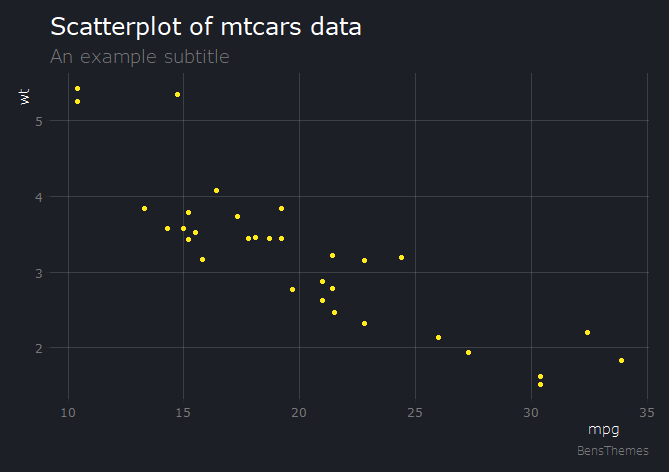

Projects
A collection of my most recent projects
Shakespeare GPT
Two GPT models were trained using Shakespeare's texts that was collated by myself. One model is a GPT trained from scratch while the other is a fine-tuned version of distilgpt2. Both models are compared using Hugging Face Spaces.
Abbreviation and Long Form Detection
This a model that is trained to classify abbreviations and long forms in text, namely in the biomedical domain. This was completed as part of coursework for my MSc.
The original model used was BERT, but this was later improved upon by using a domain adapted model.
Liquify - iOS App
Liquify is a drink tracking app made with SwiftUI. It is designed for iOS and has a Apple Watch app to track on the go. The aim of the app is to help people understand where they get their water intake from and how important it can be for their health.
This was the first app I developed after teaching myself Swift and SwiftUI over lockdown. It makes use of technologies such as HealthKit, Firebase for analytics and push notifications, RevenueCat for in-app subscriptions, CloudKit for data transfer and many more.

BensThemes
BensThemes is an R package which contains custom themes for ggplot2. I created this for personal use to quickly style charts I made using ggplot2. It is on GitHub and available for others to download with instructions.
The package contains 6 themes which are light gray, white, blue, dark, retro and a lighter dark theme. On GitHub there are instructions on how to use each theme including any other customisation options.
